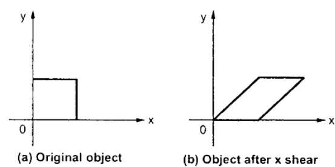

Otras transformaciones
Además de la traslación, rotación y escalamiento, existen otras transformaciones geométricas un poco más avanzadas que no se verán a detalle, pero se dará una breve definición de ellas.
Además de la traslación, rotación y escalamiento, existen otras transformaciones geométricas un poco más avanzadas que no se verán a detalle, pero se dará una breve definición de ellas.
Una simetría o reflexión es un mapeo que transforma un objeto en su imagen especular con respecto a un "espejo", que es un hiperplano de puntos fijos en la geometría. Por ejemplo, una reflexión de la letra minúscula p con respecto a una línea vertical parecerá una "q".
Es una transformación en la que a cada punto (A, B) se le hace corresponder otro (A’, B’) de tal forma que ambos están alineados con otro punto fijo O, llamado centro de homotecia y donde se verifica que OA’/OA = K, siendo K la razón de homotecia.
Lo que permite la homotecia es transformar una figura en otra semejante, pero no congruente. La relación supone que la figura obtenida es de menor o de mayor tamaño que la original.
Cuando se realiza en la dirección del eje x, esta transformación desplazará cada punto horizontalmente en una cantidad proporcional a su coordenada y. Gráficamente, las líneas paralelas al eje x permanecen donde están, pero las líneas verticales se tornan oblicuas, dependiendo del factor de transvección, que es la cotangente del ángulo de inclinación de las líneas verticales.

Obra publicada con Licencia Creative Commons Reconocimiento Compartir igual 4.0